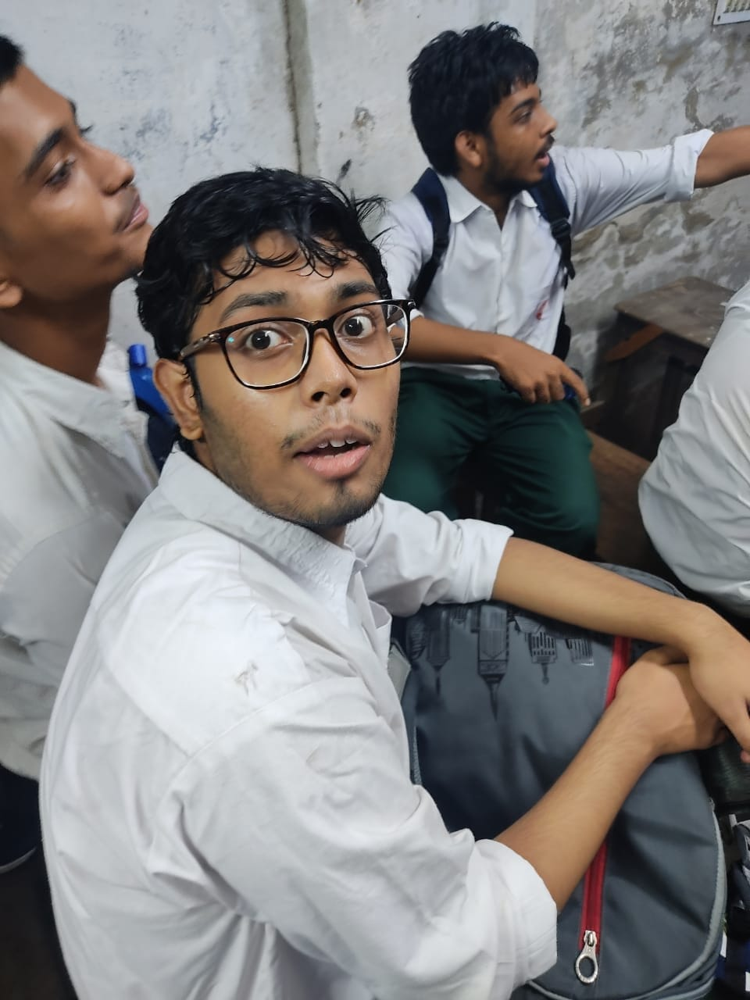

Sayan Ghosh
Resume
Skills PROGRAMMING :- Languages: C | Python | Java | JavaScript | C++ Tools: Git | Linux | Windows Technologies: HTML | CSS | SQL Frameworks & Libraries: React Js Others :- Singing | Acting Experience Kavach Hackathon Crypto Currency Investigation Tool | March, 2023 - May, 2023 | Python, SQL Used Base58 encryption to decode a public key Checked Regular Expression to identify the currency Used blockchain APIs for final checking Link - https://github.com/Sankhadip-Roy/Crypto_Invesigation_Tool Projects Windows 11 Clone(2022) - HTML | CSS | JS Made a website cloning the UI of windows 11 Link - Welcome to Windows 11 (000webhostapp.com) Car Rent(2022) - C Created a tool where anyone can book a car as rent. Link - SayanGhosh10/Car-Rental-Project (github.com) Education College : Techno International New Town B.Tech in IT(Currently in 3rd Year) Current CGPA : 8.50 Expected Grad. : June , 2025 School : Howrah Zilla School PCM with Statistics Passed : 2021 | Per. : 88.8%